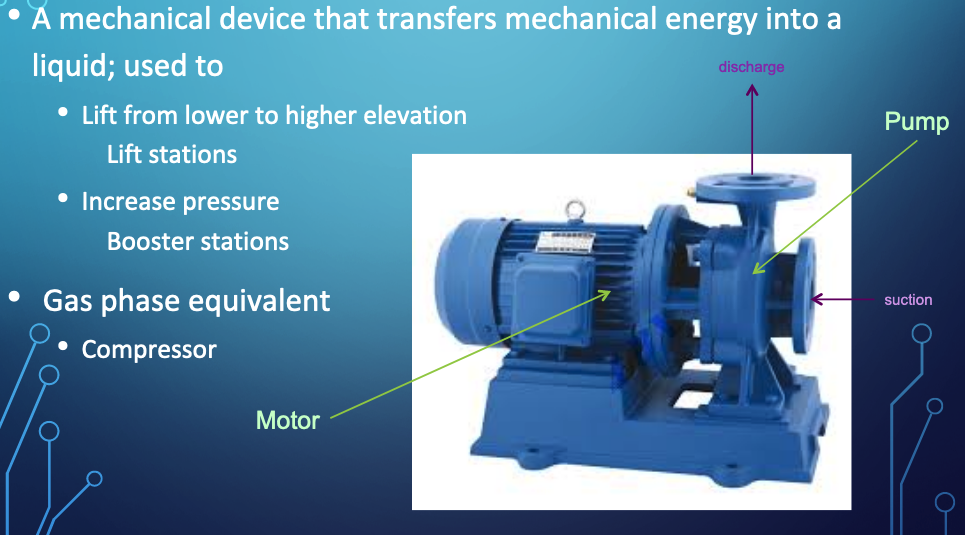
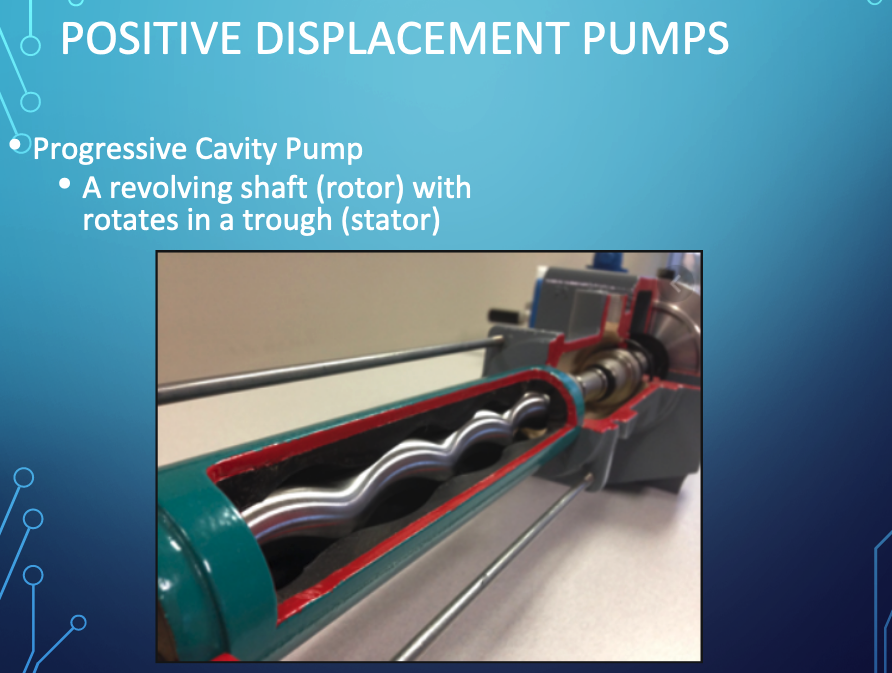
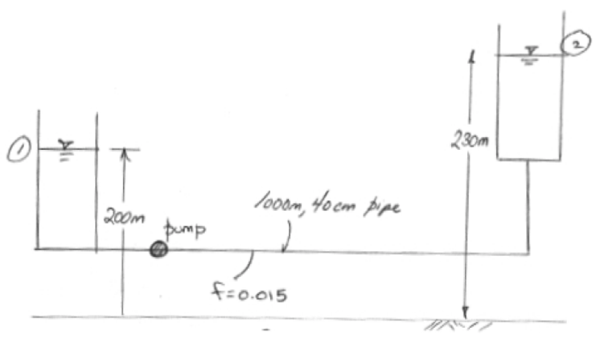
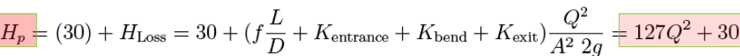
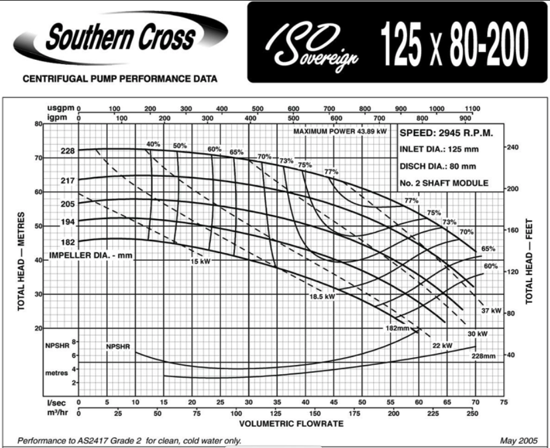
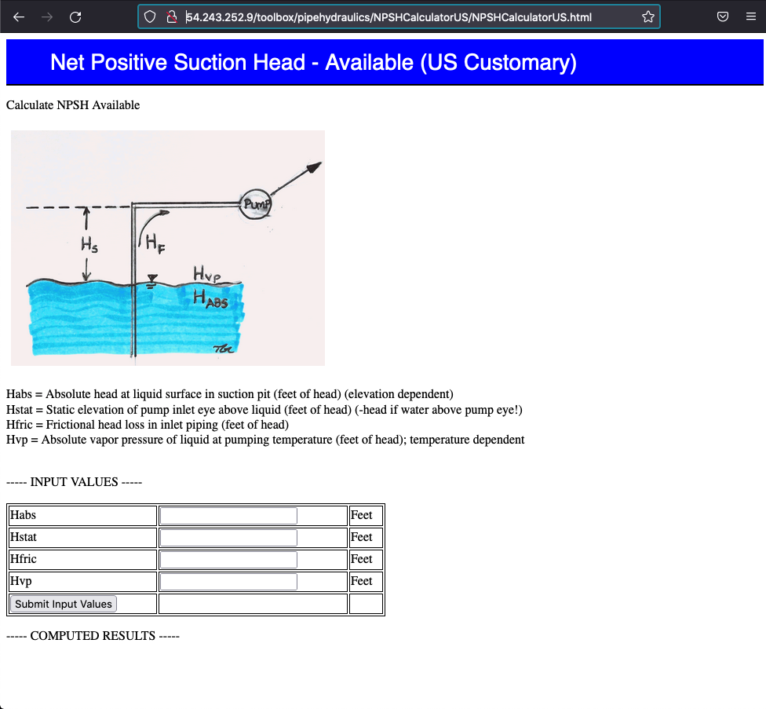
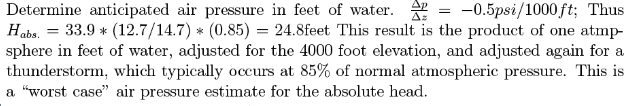
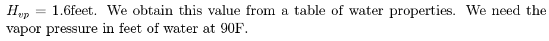
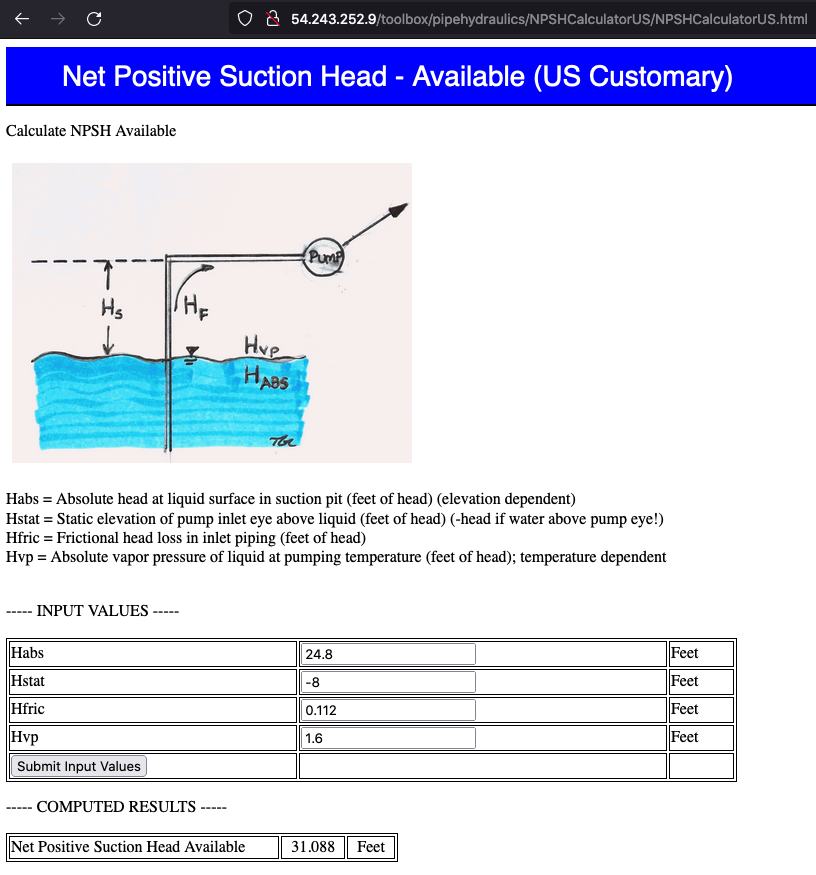

Hydraulic Machines: Pumps¶
Course Website
Readings¶
Hibbeler, R.C, Fluid Mechanics, 2ed. Prentice Hall, 2018. ISBN: 9780134655413 pp. 569-596
DF Elger, BC Williams, Crowe, CT and JA Roberson, Engineering Fluid Mechanics 10th edition, John Wiley & Sons, Inc., 2013. http://54.243.252.9/ce-3305-webroot/3-Readings/EFM-20.pdf
Cleveland, T. G. (2014) Fluid Mechanics Notes to Accompany CE 3305 at Jade-Holshule (TTU Study Abroad 2015-2019), Department of Civil, Environmental, and Construction Engineering, Whitacre College of Engineering. missing_link
Lesson Outline¶
Pumps
System Curves
Pump Curves
Operating Point
Affinity Laws
Specific Speed
Net Positive Suction Head
Pumps¶
Fluids (such as water - a liquid) flows from higher to lower energy
Path of least resistance
Head is energy per unit weight of a fluid
Pumps are used to add energy to move liquids to a higher elevation, or over a barrier, or to increase system pressure.
Background¶
A pump is a mechanical device that transfers energy into a liquid; used to
Lift from lower to higher elevation (Lift stations)
Increase pressure (Booster stations)

The gas phase equivalent is a compressor (also called a blower), which works on similar, but \(\underline{\text{not identical principles}}\) - the goal is the same!
Pumps range substantially in size depending on application
Small

Big

Types¶
Positive (Fixed) Displacement Pumps¶
Fixed volume of fluid is displaced each cycle regardless of system static head/pressure
Lower flow rates and higher head than non-positive pumps
Variable Displacement Pumps¶
Varying volume of fluid is displaced dependent on system static head/pressure (back pressure)
Examples of Fixed Displacement Pumps¶
Screw Pumps
Progressive Cavity Pumps
Reciprocating Pumps
Images of Positive Displacement Pumps¶
Screw Pumps

Progressive Cavity Pumps 
Reciprocating Pumps

Examples of Variable Displacement Pumps¶
Centrifugal (Radial-Flow) Pumps
Propeller Pumps (Axial-Flow)
Jet Pumps (Mixed-Flow)


System Curve¶
A system (characteristic) curve is a plot of required head versus flow rate in a hydraulic system. The curve depicts how much energy is needed to maintain a steady flow under the supplied conditions.
The curve is constructed at the pump location and relates the required added head (at a particular flowrate) needed to be supplied by some pump.
For example if the system schematic is

An equation of required head and discharge is

The equation tells us that the added head has to be at least 30 meters just to keep the reservoirs at the two levels shown, if any flow is to occur the pump must supply more than 30 meters of head at a prescribed flow rate. The zero flow head value is called the shutoff head. The equation plots as the figure below

Note
The design depicted is poor, a real design would have a backflow prevention device (a one-way valve) and an air-gap at the upper reservoir. Nonetheless, the conceptualization is adequate for understanding the construction and purpose of a system curve)
Pump Curve(s)¶
Pump curves are supplied by the manufacturer and convey performance of a specific pump. Information ususally includes:
Discharge (Q) on the x-axis
Head (\(H_p\)) on the left y-axis
Pump power input on the right y-axis
Pump efficiency (wire-to-water) as a percentage
The speed of the pump (RPM)
The required Net Positive Suction Head (\(NPSH_r\))
An example pump curve is shown below

Another example curve for a different pump

Note
In fluids lab you will make pump curves for a small pair of pumps in various configurations (single pump, pair in series, pair in papallel) Pump Performance Laboratory
Operating Point¶
The pump operating point or duty point is the intersection of pump characteristic and piping system characteristic. The pump will always operate where the system and pump curves intersect. At that point, there is a balance between what the system demands and what the pump can deliver.
Pump Selection¶
A primary design activity is selecting or sizing a pump for a specific application. The protocol is:
Design conditions are specified by system hydraulics (i.e. energy equation at desired flow rate)
Pump is selected from manufacturer catalogs that appears to meet nominal conditions
A hydraulic system curve (Head vs Discharge) is prepared
The system curve (or equation) is plotted onto the pump curve (manufacturer supplied)
The matching point where the two curves intersect is the anticipated operating point
A few secondary checks are:
Is there some head range remaining?
Flow range remaining?
Is pump efficiency close to optimal for the particular pump?
Is Net Positive Suction Head Available (NPSHa) large enough for the particular pump at the operating point (and start-up)?
Example: Pump Operating Point¶
A pump with the characteristic curve shown in the accompanying graph is to be installed as shown.
{kind=link}
Determine the anticipated discharge in the system?
Step 1¶
State the problem, done above! But seriously we need to create a system curve \(h_p(Q)\) and superimpose it onto the pump characteristic curve shown to find the operating point.
Step 2¶
The sketch is pretty much done for us; so not much to add here.
Step 3¶
Knowns:
Pool elevations
Working fluid (water)
Pipe lengths and diameters, and friction factors (unusual to know these, but we could determine from material properties if needed)
Pump “location”
Fitting types
Unknowns:
\(h_p(Q)\)
\(Q\)
Step 4¶
Governing equations:
Modified bernoulli: \(\frac{p_1}{\gamma}+z_1+\frac{V_1^2}{2g}+h_p(Q) = \frac{p_2}{\gamma}+z_2+\frac{V_2^2}{2g}+\frac{fL}{D}\frac{V^2}{2g}+K_{entrance}\frac{V^2}{2g}+K_{bend}\frac{V^2}{2g}+K_{exit}\frac{V^2}{2g}\)
Darcy-Weisass pipeline loss model: \(h_{pipe loss} = \frac{fL}{D}\frac{V^2}{2g}\)
Continunity: \(Q=VA\)
Step 5¶
Analysis
Using modified bernoulli, observe constant diameter pipes and start and end at each reservoir pool surface so that
and
Rearrange what remains into
We will also need to employ continunity to relate \(Q\) and \(V\) as
def velocity(flow,diameter):
import math
velocity = (flow)/(0.25*math.pi*diameter**2)
return(velocity)
def system_curve(z1,z2,flow,plength,pdiameter,pfriction_factor,k1,k2,k3,gravity):
lift = (z2-z1)
velocity_head = (velocity(flow,pdiameter)**2)/(2 * gravity)
pipe_loss = (pfriction_factor*plength/pdiameter)*velocity_head
fitting_loss = (k1+k2+k3)*velocity_head
system_curve = lift+pipe_loss+fitting_loss
return(system_curve)
def gpm2cfs(flowgpm):
gpm2cfs = flowgpm/(7.48*60) # 1 cfs = 7.48gal/cf * 60 sec/min
return(gpm2cfs)
Now use these scripts to make a table of system curve values
flowgpm = [i for i in range(0,3750,250)] # list of flowrates
flowcfs = [0 for i in range (len(flowgpm))] # empty list for conversion
# convert to cfs
for i in range(len(flowgpm)):
flowcfs[i]=gpm2cfs(flowgpm[i])
addedheads = []
for i in range(len(flowgpm)):
addedheads.append(system_curve(10,20,flowcfs[i],1000,10./12.,0.020,0.03,0.35,1.0,32.2))
print("--- System Curve Table --- \n Flow (gpm) Added Head (ft)")
for i in range(len(flowgpm)):
print(" ",round(flowgpm[i],1)," ",round(addedheads[i],1))
--- System Curve Table ---
Flow (gpm) Added Head (ft)
0 10.0
250 10.4
500 11.6
750 13.7
1000 16.6
1250 20.3
1500 24.8
1750 30.1
2000 36.3
2250 43.3
2500 51.1
2750 59.7
3000 69.2
3250 79.5
3500 90.6
Now use this table to find operating point from the pump performance curve (draw system curve on the pump curve).
pumpflow = [0,500,1000,1500,2000,2500,3000,3500,4000,4500,4900]
pumphead = [76,75,74,73,72,70,67,59,50,22,0]
import matplotlib.pyplot as plt
plt.figure(figsize=(10, 8))
plt.plot(pumpflow,pumphead,c="red")
plt.plot(flowgpm,addedheads, c="blue")
plt.legend(["Pump Curve","System Curve"])
plt.title("Operating Conditions for Example System")
plt.xlabel('Discharge (gpm)')
plt.ylabel('Head (ft)')
plt.grid(which='both')
plt.show()
Step 6¶
We are done, and would report that the operating point is \(Q \approx~3000 \text{gpm } @ 70~\text{feet of head}\)
Pump Affinity Laws¶
Pump affinity laws are similar to fan laws and were derived from similarity modeling considerations.
{kind=link}
A class of pumps that have geometrically similar shape and operation type (centrifugal, axial-flow, mixed-flow) are anticipated to behave according to the same correlations. Such a set of pumps is called a homologous series. For homologous pumps (say a collection of centrifugal pumps) the affinity relations are:
Discharge scaling: \((\frac{Q}{nD^3})_1 = (\frac{Q}{nD^3})_2\)
Added head scaling: \((\frac{h_p}{n^2D^2})_1 = (\frac{h_p}{n^2D^2})_2\)
Power scaling: \((\frac{P}{n^3D^5})_1 = (\frac{P}{n^3D^5})_2\)
Affinity laws are especially useful for estimating performance change with changes in speed (\(n\) in the formulas), which is the easiest to control variable (using a variable frequency drive controller for example). An illustrative example follows:
Example: Pump Performance with Speed (RPM) Increase¶
The pump in the system depicted in numref{example27-2} has the characteristics given in numref{example27-2-pmp}. Determine the discharge that will occur and the power required.
{kind=link}
{kind=link}
What will the discharge be if the pump speed is changed to 900 RPM?
Step 1¶
State the problem; not much to add here - we will first find the operating point assuming the nominal pump speed on the performance curve, then use affinity laws to scale to the new speed. As before we will approximate the curves using tabulations taken by visual examination of the supplied graphs.
Step 2¶
Sketch the system; this too is also done for us - we stipulate that point 1 is the pool elevation in the lower canal, and point 2 is the centerline of the discharge pipe.
Step 3¶
Known:
water elevation
discharge elevation
pump curve
pump speed (from the curve)
pipe material, diameter, length Unknown:
Discharge \(Q\)
Power \(P\)
Step 4¶
Governing equations
Modified bernoulli: \(\frac{p_1}{\gamma}+z_1+\frac{V_1^2}{2g}+h_p(Q) = \frac{p_2}{\gamma}+z_2+\frac{V_2^2}{2g}+\frac{fL}{D}\frac{V^2}{2g}+K_{entrance}\frac{V^2}{2g}+K_{bend}\frac{V^2}{2g}+K_{exit}\frac{V^2}{2g}\)
Darcy-Weisbach pipeline loss model: \(h_{pipe loss} = \frac{fL}{D}\frac{V^2}{2g}\)
Continunity: \(Q=VA\)
Step 5¶
Analysis/Solution Set-up
Apply the modified Bernoulli equation from 1 to 2
\(\frac{p_1}{\gamma}+z_1+\frac{V_1^2}{2g}+h_p(Q) = \frac{p_2}{\gamma}+z_2+\frac{V_2^2}{2g}+\frac{fL}{D}\frac{V^2}{2g}+K_{entrance}\frac{V^2}{2g}+K_{bend}\frac{V^2}{2g}+K_{exit}\frac{V^2}{2g}\)
and observe that
\(V_1 \approx~0\) at the free surface
\(p_1 = p_2 = 0 \text{ gage}\)
\(K_{entrance} = 0.01\) table look-up or the mighty internet
\(K_{bend} = 0.35\) table look-up or the mighty internet
\(K_{exit} = 0.0\) no fitting here.
so our added head equation in this case becomes
Unlike the prior example, this time we will need to compute friction factors based on pipe material and discharge so we will need auxiliary functions to compute Reynolds’ number and friction factors. By far the easiest is to use the Jain approximation, repeated below from earlier lessons:
\(Re_d(Q) = \frac{16 \rho D Q^2}{\mu \pi^2 D^4}\)
and
\(f=\frac{0.25}{[log_{10}(\frac{k_s}{3.7D}+\frac{5.74}{Re_d^{0.9}})]^2}\)
For this example we look up values for water for the Reynolds’ number computations
\(\rho = 1000~\frac{kg}{m^3}\) and \(\mu = 1.14\times10^{-3}~\frac{N s}{m^2}\)
Now we write our prototype functions
Using the same approach as before, except in SI units
def reynolds(flow,rho,mu,diameter):
import math
reynolds = rho*velocity(flow,diameter)*diameter/mu
return(reynolds)
def jainff(roughness,diameter,reynolds):
import math
num = 0.25
den= (math.log10( (3.7*roughness/diameter)+(5.74/(reynolds**0.9)) ))**2
jainff=num/den
return(jainff)
def velocity(flow,diameter):
import math
velocity = (flow)/(0.25*math.pi*diameter**2)
return(velocity)
def system_curve(z1,z2,flow,plength,pdiameter,pfriction_factor,k1,k2,k3,gravity):
lift = (z2-z1)
velocity_head = (velocity(flow,pdiameter)**2)/(2 * gravity)
pipe_loss = (pfriction_factor*plength/pdiameter)*velocity_head
fitting_loss = (k1+k2+k3)*velocity_head
system_curve = lift+pipe_loss+fitting_loss
return(system_curve)
length = 62.5 # overall length includes the bend and a little extra to clear the berm
zone = 20
ztwo = 21.5
rho = 1000
mu = 1.14e-03
diameter = 0.356
roughness = 0.0000265 # table lookup for steel in meters!
k1 = 0.01
k2 = 0.35
k3 = 0
gravity = 9.8
flowcms = [0 for i in range(1,16)] # list of flowrates
# convert to floating point
for i in range(len(flowcms)):
flowcms[i]=0.00001+i*0.025 # sneaky way to get a list from 0 to 1 in steps of 0.1
addedheads = []
for i in range(len(flowcms)):
red = reynolds(flowcms[i],rho,mu,diameter)
ff = jainff(roughness,diameter,red)
addedheads.append(system_curve(zone,ztwo,flowcms[i],length,diameter,ff,k1,k2,k3,gravity))
print("--- System Curve Table --- \n Flow (cms) Added Head (m)")
for i in range(len(flowcms)):
print(" ",round(flowcms[i],3)," ",round(addedheads[i],3))
--- System Curve Table ---
Flow (cms) Added Head (m)
0.0 1.5
0.025 1.514
0.05 1.553
0.075 1.618
0.1 1.706
0.125 1.82
0.15 1.958
0.175 2.121
0.2 2.309
0.225 2.521
0.25 2.758
0.275 3.019
0.3 3.305
0.325 3.616
0.35 3.952
pumpflow = [0,0.025,0.05,0.075,0.10,0.125,0.15,0.20,0.25,0.275,0.30]
pumphead = [5,4.9,4.6,4.1,3.35,3.24,3.14,2.86,2.54,2.23,1.8]
import matplotlib.pyplot as plt
plt.figure(figsize=(10, 8))
plt.plot(pumpflow,pumphead,c="red")
plt.plot(flowcms,addedheads, c="blue")
plt.legend(["Pump Curve","System Curve"])
plt.title("Operating Conditions for Example System")
plt.xlabel('Discharge (cms)')
plt.ylim([0,10])
plt.ylabel('Head (m)')
plt.grid(which='both')
plt.show()
myflow=0.24
myhead=round(system_curve(zone,ztwo,myflow,length,diameter,ff,k1,k2,k3,gravity),2)
print("Added head is ",myhead," meters for discharge of ",myflow*1000," liters per second")
Added head is 2.65 meters for discharge of 240.0 liters per second
So from the graphs, the operating point is at about \(Q=0.24~\frac{m^3}{sec}\) with an operating head of \(2.65~m\)
Next the power requirement is \(P=\frac{Q\gamma h}{\eta}\) From the supplied curves, the efficiency at the design flowrate is about 80%.
power = 0.24*system_curve(zone,ztwo,0.24,length,diameter,ff,k1,k2,k3,gravity)*9800/0.8
print("Wire-to-water power in watts : ",round(power,3))
Wire-to-water power in watts : 7798.802
So the first part is done, now to adjust for a different pump speed.
The affinity laws in this case are:
Discharge scaling:
\((\frac{Q}{nD^3})_1 = (\frac{Q}{nD^3})_2\) which after rearrangement for \(Q_2\) the higher speed operation
\(Q_2 = Q_1\frac{n_2}{n_1}\frac{D_2^3}{D_1^3}\)
n1 = 690
n2 = 900
d1 = 1
d2 = 1
q1 = 0.24
q2 = q1*(n2/n1)*(d2**3/d1**3)
print("Scaled pump discharge ",round(q2,3))
Scaled pump discharge 0.313
Now determine the increased head loss
print("Increased RPM added head",round(system_curve(zone,ztwo,0.31,length,diameter,ff,k1,k2,k3,gravity),3))
Increased RPM added head 3.423
Now check that the pump will produce this much head using
Added head scaling:
\((\frac{h_p}{n^2D^2})_1 = (\frac{h_p}{n^2D^2})_2\)
h1 = 2.65
h2 = h1*(n2**2/n1**2)*(d2**2/d1**2)
print("Scaled Pump Head ",round(h2,3))
Scaled Pump Head 4.509
So the pump appears to be able to produceeough head, now scale the power using
Power scaling:
\((\frac{P}{n^3D^5})_1 = (\frac{P}{n^3D^5})_2\)
p1 = 7798*0.8 # we are working with mechanical power here
p2 = p1*(n2**3/n1**3)*(d2**5/d1**5)
print("Scaled Power ",round(p2,3))
Scaled Power 13843.741
Step 6¶
A quick comment, the step to check that the scaled head is at least big enough to overcome the required added head at the new flow rate is often forgotten but should be checked.
Net Positive Suction Head (NPSH)¶
The most common cause of pumping system failure is poor suction conditions.
Cavitation occurs when liquid pressure is reduced to the vapor pressure of the liquid, then the liquid flashes to make small gas bubbles, which are unstable and collapse back into liquid - this rapid localized phase change process imparts large destructive energy into the pump impeller and housing and quickly destroys the pump itself in addition to creating loss of priming.
In a pipe system with a pump, cavitation will occur when the absolute pressure at the inlet (eye) falls below the vapor pressure of the water.
Note
The pump destruction described is not usually instant, but does happen pretty fast. For example weeks to failure when the designer expects years between overhauls.
High speed turbopumps can fail in seconds when they are supposed to run for minutes. Cavitation is a big deal in things like rocket ships, nuclear power plants (cooling system), and other high-risk applications; less so in Civil Engineering, usually our failures just cost time and money - a lift station failure during a flood could cause death, so we are not risk-free
Considerations
Liquid must enter the pump eye under some pressure; this pressure is dictated by the hydraulic system and is called the Available Net Positive Suction Head \(NPSH_a\).
A centrifugal pump cannot lift water unless it is primed; the first stage impellers must be below the static HGL in the suction pit at startup.
The manufacturer supplies a value for the minimum pressure the pump needs to operate; this pressure is called the Required Net Positive Suction Head \(NPSH_r\)
Proper pump operation without cavitation demands that $\( NPSH_r < NPSH_a \)$
Can calculate \(NPSH_a\) from

An on-line calculator is located at http://54.243.252.9/toolbox/pipehydraulics/NPSHCalculatorUS/NPSHCalculatorUS.html ; the calculator is specific for US Customary Units, but would easily be adaptabe for SI units. The interface looks like

NPSHa Example¶
Problem Statement¶

Solution (part 1)¶

Solution (part 2)¶

Solution (part 3)¶

Solution (part 4)¶

We look up the liquid properties at http://54.243.252.9/toolbox/fluidmechanics/WaterPropertiesUS/WaterPropertiesUS.html
Solution (part 5)¶
Now insert these intermediate values into the equation for \(NPSH_a\) paying close attention to how the equation is written in the calculator (the \(H_{static}\) sign is changed in the calculator in comparison to the equation presented above, the remaining terms are unchanged.

Solution Summary¶